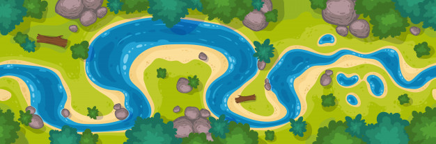

Concept 1
Le premier concept que je propose est une modification des pisteurs, la gameplay est assez redondant sachant que chaque pisteur fait les mêmes actions. L'idée est de pouvoir leur donné des rôles, des fonctionnalités que tous ne peuvent pas faire. Nous avons comme capacité la vision, le mouvement et le tir, trois fonctionnalités pouvant être modifié afin de créer différent rôle.
| Rôle | Vision | Déplacement | Tir | Autre |
|---|---|---|---|---|
Le scout |
Lorsqu'il découvre des traces, il a la possibilité d'obtenir des informations supplémentaires tel que la direction que la créature a pris ensuite | Peut se déplacer de maximum 5 cases | Son taux de réussite est de 20% | / |
| Le chasseur | Peut voir les cases autour de lui | Peut se déplacer de maximum 2 cases | Son taux de réussite est de 60% | / |
| Le braconnier | Peut voir les cases autour de lui | Peut se déplacer de maximum 3 cases | Son taux de réussite est de 50% | Il a la possibilité de posé des pièges ou des alarmes pour détecter la créature |
| L'explorateur | Peut voir une case plus loin verticalement et horizontalement | Peut se déplacer de maximum 3 cases | Son taux de réussite est de 30% | / |
Cet ajout de rôle permet un gameplay bien différent où il faut savoir gérer ces personnages pour rendre la traque le plus efficace possible. Cela permettrait une plus grande dynamique dans le jeu à préparer de manière plus précise ses tours.
Concept 2
Le deuxième concept est une modification de la map. La map étant très vide, elle engendre de long moment de déplacement sans jamais croiser le monstre ou de trace. Ce que nous pourrions rajouter sur la map serait des obstacles pour limiter les zones de déplacement et permettre des zones très serrés. Des chemins infranchissables pour les pisteurs comme une rivière. Des cases avec des hauteurs différentes qui n'est possible d'y accéder que en montant une pente se trouvant sur le côté, l'escalade n'étant pas possible et permettre une zone safe pour les pisteurs et capable de tirer sur la créature en hauteur sans avoir peur d'être touché.
Toutes ces modifications permettant de donner lieu à différente map pour amener des parties toutes différentes les unes des autres et possibilité aussi d'intégré une générations de map aléatoire tel que minecraft pour toujours devoir revoir la manière dont vous allez gérer vos pisteurs.
Source
Image de fond: fr.freepik.com, créateur: ddy_setya
Image d'exemple de modification de map: fr.frrepik.com, créateur: upklyak